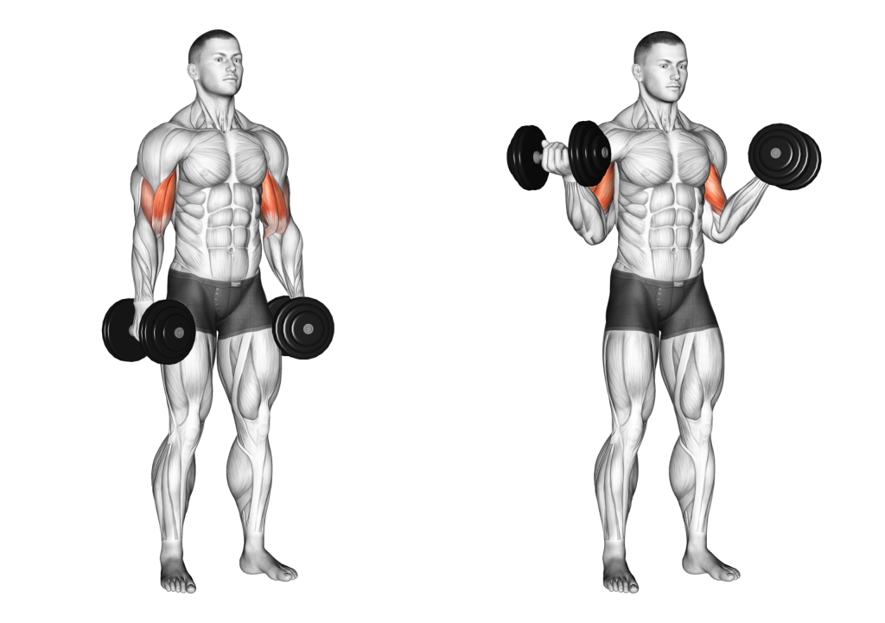

ord


Biceps kan trenes opp ved styrketrening og motstandstrening. Det er så å si umulig å isolere denne muskelen, men om man nøyer seg med overarmens fremside finnes det en rekke øvelser. Et eksempel på en velkjent og enkel bicepsøvelse er biceps curl. To øvelser som først og fremst isolerer overarmens fremside er scott curl og konsetrasjonscurl
